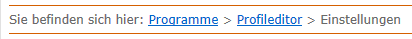
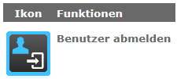

Ayuda de contexto
{kind=link}
Esta función muestra la ventana de ayuda dependiente del contexto en el lado derecho del programa. Las ventanas del programa se reducen en la proporción correspondiente. Así se obtienen informaciones encauzadas sin tapar las funciones importantes del programa.
Cada uno de los temas de la ayuda se muestran en función del contexto de la vista o de la función seleccionada en el programa.
Info: El diálogo vuelve a ocultarse pulsando en la línea de encabezamiento del diálogo de ayuda.
| Símbolo | Significado |
|---|---|
| Abre o cierra un texto desplegable. | |
| Abre la caja de diálogo de la impresora para imprimir el tema visualizado. | |

|
Regresa al principio del tema. El botón sólo se muestra si el tema es mayor que el área de visualización vertical en el diálogo de ayuda. |
La ayuda de contexto puede desactivarse con el icono del alfiler en la línea de encabezamiento del diálogo de ayuda. Estando desactivada la ayuda de contexto permanece el contenido incluso al cambiar a otro diálogo o a otra función.
Tip: Es necesario desactivar la ayuda de contexto en descripciones del proceso en las que haya que seleccionar diferentes vistas y funciones del programa.
| Símbolo | Significado |
|---|---|

|
Ayuda de contexto activada |
| Ayuda de contexto desactivada |
La ayuda de contexto dispone de las siguientes posibilidades para navegar en el contexto actual:
- Breadcrumbs
- Botones de símbolos
Las breadcrumbs (migas de pan) muestran la ruta al tema actual de la ayuda. Pulsando sobre una entrada subrayada puede saltarse al tema subyacente.

Pulsando sobre un botón de símbolo bordeado en azul puede saltarse al tema subyacente.
